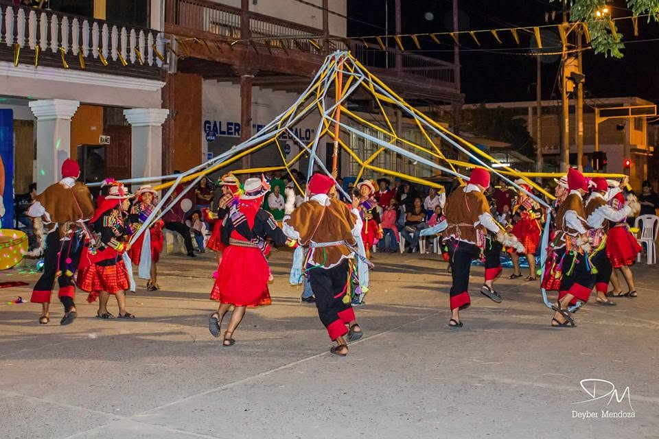

Un viaje a través del tiempo
La historia de Catacaos, Color y Tradición nace desde la solidaridad, la danza y el amor por nuestra cultura.
Catacaos, Color y Tradición
El Concurso de Danzas y Estampas Folclóricas Catacaos, Color y Tradición es una gran celebración que resalta la riqueza cultural y artística de nuestro país.
Este evento se originó como una iniciativa para preservar y promover las tradiciones folclóricas que han definido la identidad de los peruanos a lo largo de los años.
Una respuesta cultural nacida desde la solidaridad
En sus inicios, Catacaos, Color y Tradición nació como un festival de danzas el 3 de junio de 2017, con el noble propósito de llevar alegría y esperanza a la comunidad cataquense, que había sido duramente afectada por los desastres provocados por el desborde del río Piura.
Este evento reunió a diversos grupos folclóricos de la región Piura, quienes llegaron a Catacaos con la misión de ofrecer una noche de espectáculo y consuelo a los habitantes.
Lo que comenzó como una respuesta solidaria a la adversidad se transformó con el tiempo en una celebración que rinde homenaje a la rica herencia cultural peruana.

De festival solidario a concurso de danzas
La primera edición denominada Concurso de Danzas y Estampas Folclóricas se realizó el 04 de noviembre de 2017, como parte de la celebración por el aniversario del G.F. “Pasión y Sentimiento Cultural” del distrito de Catacaos.
Desde aquella primera edición, el evento ha evolucionado significativamente, incorporando categorías como Danzas Regionales, Danzas Nacionales, el formato de grupos y, en 2024, la participación de grupos infantiles.
Un evento que reúne talento y tradición
Cada año, diferentes agrupaciones se han sumado a ser partícipes de este gran evento, dando realce al concurso con sus puestas en escena, vestuarios, música y expresiones culturales.
En la actualidad, el Concurso de Danzas y Estampas Folclóricas Catacaos, Color y Tradición se ha consolidado como una de las citas más esperadas para los amantes del folclore peruano en la región Piura.
La participación ha crecido con el tiempo, atrayendo a un número cada vez mayor de participantes y espectadores, tanto locales como de otras regiones del país.
Lo que representa el concurso
Cultura
Preservamos y difundimos las danzas y tradiciones del Perú.
Comunidad
Nacimos desde la solidaridad y el compromiso con Catacaos.
Identidad
Celebramos la diversidad cultural de nuestras regiones.
Futuro
Impulsamos a nuevas generaciones de artistas y danzantes.
Tradición que mira hacia el futuro
Catacaos, Color y Tradición sigue evolucionando con cada edición, manteniendo viva la esencia de sus inicios mientras se adapta a los nuevos tiempos.
Con la participación de la juventud y el apoyo de la comunidad, el evento asegura la continuidad de nuestras tradiciones culturales, garantizando que la riqueza cultural perdure para las futuras generaciones.
Ver todas las ediciones